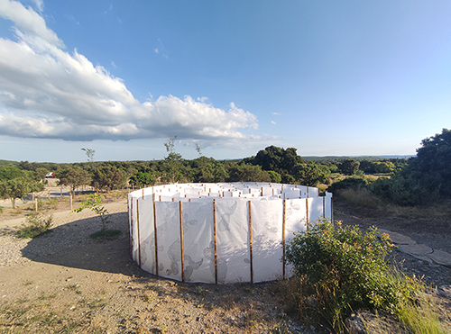
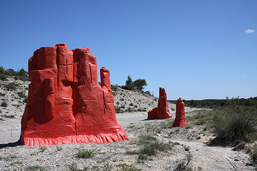
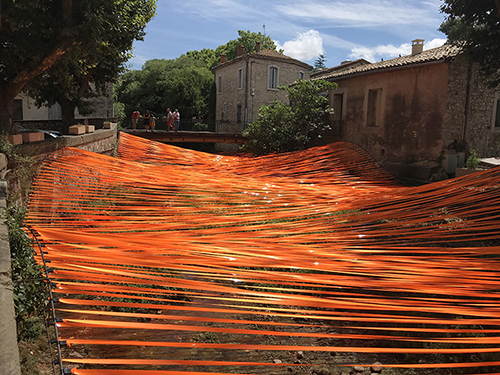
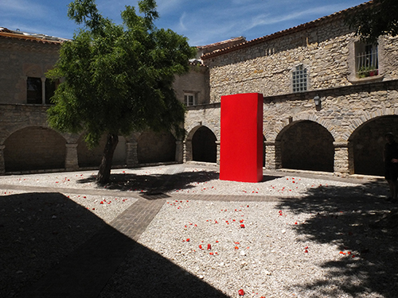
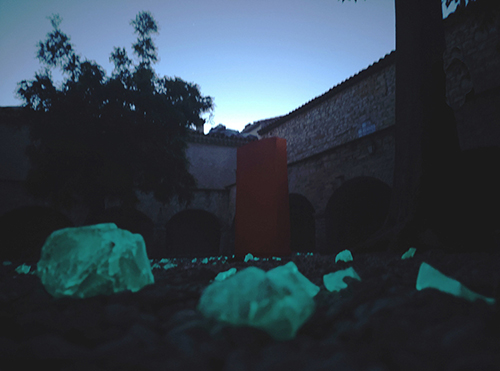

Flow de Pier Fabre, tissu polyester, mâts alu et composites. Installation in situ, exposition aux bords des paysages #5, photo © Christine Douylliez, CCGPSL, 2021.
aux bords des paysages #5
Commissariat du LAAB, Communauté des communes du Grand Pic Saint-Loup
La cinquième édition d’aux bords des paysages nous invite à un cheminement dans le paysage du Pic Saint-Loup à la rencontre de ses formations rocheuses et de ses sites transformés au gré de la fugacité et de la puissance des phénomènes naturels. C’est un voyage au cœur du territoire qui, en accueillant des œuvres monumentales, offre au regard de nouveaux points de repères. Le parcours de cette année nous conduit à découvrir sept installations inédites qui convoquent l’imaginaire, révèlent l’esprit des lieux et invitent à une célébration collective des paysages.
Ainsi, pour ses sculptures Monument Valley, Gaspard Combes s’inspire des roches emblématiques du célèbre paysage désertique du plateau du Colorado et les transpose dans le contexte de la garrigue du Pic Saint-Loup. Cette mise en scène inattendue transforme le réel des usagers de la route D17E6 et participe à la construction d’un récit espiègle sur le temps géologique, le voyage et la beauté du lieu. Sur le parcours, les interventions de Pier Fabre modifient deux sites distincts. La spectaculaire installation Owerflow investit le lit du Lirou aux Matelles avec des rubans colorés qui redessinent les berges de la rivière et l’audacieuse œuvre Flow ponctue le col de Fambetou avec les tissus flottants exposés aux aléas des éléments.
L’œuvre Amazing de Vincent Dezeuze, installée au pied de Pic Saint-Loup à Cazevieille, invite les visiteurs à suivre le labyrinthe au cœur d’une image, d’une forme et d’un symbole qui, à la manière d’un rite de passage ouvre l’accès à la montagne, mais aussi à la découverte de soi. L’exposition se poursuit dans le cloitre du prieuré de Saint-Jean-de-Cuculles où Lydie Regnier et Samuel Aligand réalisent le projet commun Attractions terrestres. Il est composé de deux œuvres : Matrice, un monolithe rouge qui fait écho aux pierres dressées qui marquent le territoire depuis la préhistoire et Eclats, de nombreuses pierres en céramique émaillées et phosphorescentes. Ces sculptures colorées évoquent la formation géologique du paysage, rappellent les gestes des tailleurs de pierres et signalent par leurs matières un transfert poétique d’énergie entre le ciel et la terre. À Saint-Mathieu-de-Tréviers, Anaïs Lelièvre nous fait voyager dans les temps archaïques des strates géologiques du Pic Saint-Loup, en choisissant de décliner son dessin d’ammonite dans l’installation Ammonoidea créée pour la grande façade vitrée de l’Hôtel de la Communauté de communes. Associée à l’architecture du bâtiment, cette coquille fossilisée rappelle sa fonction protectrice originelle, celle d’un habitat. Enfin, un nouveau site rejoint ce parcours, celui du parc Saint Sauveur à Saint-Clément-de-Rivière où Ludovic Layre met en scène son dessin Infinite focus. À la manière d’un mobile accroché entre les arbres, l’ensemble d’éléments de cette installation transpose le paysage du Pic Saint-Loup dans un nouvel espace sollicitant les visiteurs pour ajuster la vitesse de leurs déplacements aux incessantes mises au point de leurs regards.
Ce voyage aux bords des paysages du Pic Saint- Loup est aussi celui au cœur des pratiques artistiques qui les subliment confrontant l’imaginaire à des possibilités nouvelles, comme soulignait Gaston Bachelard dans sa Poétique de l’espace, chaque détail poétique introduit de l’étrange et « une simple image, si elle est nouvelle, ouvre un monde ».
Préface du catalogue, Anna Olszewska, historienne de l'art.

Amazing de Vincent Dezeuze, toile intissée brulée, bois brulé. Installation in situ, exposition aux bords des paysages #5, photo © Sabrina Issa, CCGPSL, 2021.

Monument Valley de Gaspard Combes, bois, grillage, mousse, enduit. Installation in situ, exposition aux bords des paysages #5, photo © Gaspard Combes, CCGPSL, 2021.

Overflow de Pier Fabre, ruban polyester. Installation in situ, exposition aux bords des paysages #5, photo © Pier Fabre, CCGPSL, 2021.

Vue de l'installation, Attractions terrestres conçue en commun par les artistes, Lydie Regnier et Samuel Aligand, est composée de deux œuvres Matrice et Eclats, exposition aux bords des paysages #5, photo © Samuel Aligand, CCGPSL, 2021.

Vue de l'installation, Attractions terrestres conçue en commun par les artistes, Lydie Regnier et Samuel Aligand, est composée de deux œuvres Matrice et Eclats, exposition aux bords des paysages #5, photo © Sabrina Issa, CCGPSL, 2021.